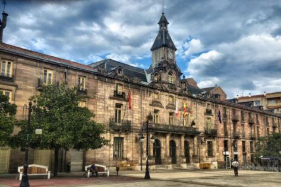

Vía Verde
La Lechera
|
Torrelavega es un municipio y ciudad del norte de España.
La ciudad es de carácter industrial y comercial, siendo el
segundo núcleo urbano más relevante de la comunidad autónoma
de Cantabria por detrás de la capital autonómica Santander.

|